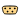
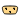

Library of icons
This package contains definitions for the graphical layout of components which may be used in different libraries. The icons can be utilized by inheriting them in the desired class using "extends" or by directly copying the "icon" layer.
Copyright © 1998-2015, Modelica Association, DLR, AIT, and Modelon AB.
This Modelica package is free software; it can be redistributed and/or modified under the terms of the Modelica license, see the license conditions and the accompanying disclaimer in Modelica.UsersGuide.ModelicaLicense2.
Extends from Icons.Package (Icon for standard packages).
| Name | Description |
|---|---|
| Icon for general information packages | |
| Icon for contact information | |
| Icon for release notes in documentation | |
| Icon for external references | |
| Icon for packages containing runnable examples | |
| Icon for runnable examples | |
| Icon for standard packages | |
| Icon for packages containing base classes | |
| Icon for package containing variants | |
| Icon for packages containing interfaces | |
| Icon for packages containing sources | |
| Icon for packages containing sensors | |
| Icon for utility packages | |
| Icon for packages containing type definitions | |
| Icon for packages containing icons | |
| InternalPackage | Icon for an internal package (indicating that the package should not be directly utilized by user) |
| Icon for package containing property classes | |
| MaterialProperty | Icon for property classes |
| RotationalSensor | Icon representing a round measurement device |
| TranslationalSensor | Icon representing a linear measurement device |
| Icon for functions | |
| Icon for records | |
| Obsolete class kept only for backwards compatibility (use Complex instead) | |
| Icon for Real types | |
| TypeInteger | Icon for Integer types |
| TypeBoolean | Icon for Boolean types |
| TypeString | Icon for String types |
|  SignalBus | Icon for signal bus |
|  SignalSubBus | Icon for signal sub-bus |
| UnderConstruction | Icon for classes that are still under construction |
| ObsoleteModel | Icon for classes that are obsolete and will be removed in later versions |
| This icon will be removed in future Modelica versions, use Package instead | |
| This icon will be removed in future Modelica versions, use Package instead | |
| GearIcon | This icon will be removed in future Modelica versions |
| This icon will be removed in future Modelica versions. | |
| This icon will be removed in future Modelica versions. |
Icon for general information packages
This icon indicates classes containing only documentation, intended for general description of, e.g., concepts and features of a package.
Icon for contact information
This icon shall be used for the contact information of the library developers.
Icon for release notes in documentation
This icon indicates release notes and the revision history of a library.
Icon for external references
This icon indicates a documentation class containing references to external documentation and literature.
Icon for runnable examples
This icon indicates an example. The play button suggests that the example can be executed.
Icon for property classes
This icon indicates a property class.
Icon representing a round measurement device
This icon is designed for a rotational sensor model.
Icon representing a linear measurement device
This icon is designed for a translational sensor model.
Icon for functions
This icon indicates Modelica functions.
Icon for records
This icon is indicates a record.
Obsolete class kept only for backwards compatibility (use Complex instead)
Obsolete class, only kept for backwards compatibility. The type classes TypeReal, TypeInteger etc. have been introduced to associate an icon to the built-in base classes Real, Integer etc. Instead for Complex, an icon is already introducded in its definition (which is not possible for the built-in classes). Therefore, TypeComplex is just an alias to Complex and is therefore superfluous.
Extends from Complex (Complex number with overloaded operators).
| Name | Description |
|---|---|
| re | Real part of complex number |
| im | Imaginary part of complex number |
Icon for Real types
This icon is designed for a Real type.
Extends from Real.
Icon for Integer types
This icon is designed for an Integer type.
Extends from Integer.
Icon for Boolean types
This icon is designed for a Boolean type.
Extends from Boolean.
Icon for String types
This icon is designed for a String type.
Extends from String.
Icon for signal bus
Icon for signal sub-bus
This icon is designed for a sub-bus in a signal connector.
Icon for classes that are still under construction
Library developers can use this icon to indicate that the respective model is under construction.
Icon for classes that are obsolete and will be removed in later versions
This partial class is intended to provide a default icon for an obsolete model that will be removed from the corresponding library in a future release.
This icon will be removed in future Modelica versions
This icon of a gearbox will be removed in future versions of the library. Please use one of the icons of Mechanics.Rotational.Icons instead.
This icon will be removed in future Modelica versions.
This icon of an electrical motor model will be removed in future versions of the library. Please use a locally defined icon in your user defined libraries and applications.
This icon will be removed in future Modelica versions.
This icon indicate classes containing only documentation, intended for general description of e.g., concepts and features of a package.
This icon will be removed in future versions of the Modelica Standard Library. Instead the icon Information shall be used.
Automatically generated Fri Oct 02 11:08:25 2015.